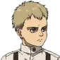
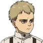
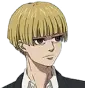
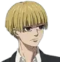

 


EREN JEAGER
Estado: fallecido
Edad: 20
Eren jeager empieza latemporada infiltrado en Marley, tras confrontar a Reiner se revela y comienza un ataque a la ciudad enemiga. Aqui se nos muestra como el odio hacia los titanes y el deseo de libertad que se cumpliría al eliminarlos fue transferido a la gente de afuera de la isla, ellos son los nuevos enemigos. Se nos cuenta que el verdadero poder de su titán es ver el futuro y el pasado desde el punto de vista de los portadores del mismo. A lo largo de la temporada Eren se vuelve cada vez más agresivo y se va alejando de sus amigos, incluso llegando a atacar a Armin y Mikasa. Comienza un movimiento seguido por muchos de los soldados, quienes lo idolatran como el salvador. Luego de engañar a su medio hermano Zeke, Eren obtiene los poderes del titán fundador y da inicio a su plan de acabar con la humanidad exceptuando a la gente de la isla. Eren pasa de ser el protagonista a cumplir un papel de antagonista. Finalmente Eren muere a manos de Mikasa para revelarnos su amor por ella, así como la verdad detras de su plan para salvar a sus amigos, incluso sabiendo los resultados.
MIKASA ACKERMAN
Estado: viva
Edad: 22
Mikasa Ackerman empieza la temporada mostrando su descontento con el plan de Eren de atacar Marley, pero sin embargo, una vez más, nos asegura que su prioridad es él y que por ello lo seguirá igualmente. A lo largo de la temporada Mikasa verá como Eren se aleja de ella y se va volviendo más real el plan de aniquilar a la raza humana, esto la llevará a enfrentar el dilema de que hará en caso de ser necesario matar a Eren. Al final de la serie, luego de que Eren asesine a la mayor parte de la población, Mikasa mata a Eren para salvar al mundo. Se muestra el amor que Mikasa sentía por Eren.
ARMIN ARLERT
Estado: vivo
Edad: 20
Armin Arlert al inicio de la temporada siue el plan de Eren utilizando su poder de titán colosal para el ataque a Marley, sin embargo a lo largo de la temporada se ve como Armin está cada vez más en contra de las ideas de su amigo por lo que terminará formando parte del grupo que tratará de detenerlo. A su vez de reencuentra con Annie con quien manteine una buena relación para al final estar juntos. Luego de la muerte de Hange, hereda el puesto de comandante de la legión.
LEVI ACKERMAN
Estado: vivo
Edad: +30
Levi Ackerman se presenta en el ataque a Marley, capturando a Zeke, quien en realidad traiciona a Marley por un plan con su medio hemano, sin embargo es puesto bajo vigilancia del soldado más fuerte de la humanidad y de sus tropas. Tras un intento de escape Zeke logra herir a Levi con una explosión, donde pierde un ojo y sufre daños en todo el cuerpo. Aún así logra enfrentarse a Eren en elcombate final donde pierde la capacidad de caminar.
HANGE ZOE
Estado: fallecida
Edad: Desconocida
Hange Zoe durante la temporada lidia con el mando de sus tropas frente a la revolución comandada por Eren. Asume un papel de lider del grupo que tratará de salvar a la humanidad a pesar de que se muestra agotada por el puesto que heredó de Erwin. Es quien encuentra, salva y trata las heridas de Levi, evitando su muerte. Finalmente Hange, buscando conseguir tiempo para su equipo, se sacrifica.
Jean kirstein
Estado: vivo
Edad: 20
Jean kirstein es uno de los soldados que va en rescate de Eren en el ataque de Marley, sin embargo rápidamente muestra su descontento con el plan luego de la muerte de su amiga Sasha. En primer lugar estará en contra del golpe de estado dirigido por floch, luego se verá tentado, ya que este le promete la tranquilidad que él siempre había soñado para el y su familia. A pesar de la tentación, Jean opta por seguir a Mikasa y el resto de los reclutas dirigidos por Hange, entre los cuales se encuentra Reiner, con quien tiene una pelea tras enterarse que Marco murió por culpa de Reiner, Bertolt y Annie. Finalente logran trabajar en equipo.
SASHA BLOUSE
Estado: viva
Edad: 21
Sasha Blouse no tiene mucha aparición en esta temporada pues es asesinada por Gabi, sin embargo se nos muestra como su muerte es uno de los primeros puntos que aleja a Eren del resto de reclutas, además de mostrarnos como había formado una relación de amistad, casi de pareja, con un ciudadano de Marley.
CONNIE SPRINGER
Estado: vivo
Edad: 20
Connie Springer es uno de los soldados que participa en el ataque a Marley, sin embargo rápidamente se molesta con Eren luego de que este se riera al enterarse de la muerte de Sasha. Más adelante en la temporada, Connie se encuentra con Falco, quien ya había heredado el titán maníbula, por lo que intenta engañarlo para dárselo de comer a su madre y que esta vuelva a ser una humana, sin embargo Armin logra interceptarlo y detenerlo, logrando que recapacite.
REINER BRAUN
Estado: vivo
Edad: 22
Reiner Braun vuelve a Marley, su ciudad natal, donde se reencuentra con Eren, a quien le explica lo ocurrido, mostrandole que estaba arrepentido por todo. A lo largo de la temporada vemos a un Reiner con secuelas por la misión fallida, por momentos se lo ve agotado, otros arrepentido, pero sin embargo sabe que debe seguir adelante para detener a Eren. Gran parte de esta temporada vemos a Reiner como un personaje principal quien une fuerzas con los soldados de Hange para salvar el mundo.
ANNIE LEONHART
Estado: viva
Edad: 16
Annie Leonhart vuelve a aparecer en esta temporada. Tras 5 años encerrada en un capullo endurecido, Annie por fin es libre solo para encontrarse con que Eren desea acabar con su hogar, incluyendo a su padre, a quien le había prometido volver y una de las motivaciones principales de este personaje. Rápidamente Annie se une a los soldados que se enfrentaran a Eren, y comineza a formar una buena relación con Armin, primero de amistad para luego pasar a ser pareja.
ZEKE JEAGER
Estado: fallecido
Edad: 27
Zeke Jeager es el portador del titán bestia y medio hermano de Eren, con quien ideó un plan, luego de fingir ser capturado, fue llevado a la isla de Paradis. Allí comienza el plan atacando al escuadron de Levi, y dejandolo malherido. Luego se reune con Eren para ejecutar con el fin de utilizar sus poderes para volver esteril a la población de Eldia y que así se extingan los titanes, sin embargo es traicionado y secuestrado por su medio hermano. En el enfrentamiento final, Levi lo mata cortandole la cabeza.
GABI BRAUN
Estado: viva
Edad: 12
Gabi Braun hace su primera aparición en esta temporada, se nos presenta como una guerrera, es decir, es candidata a heredar el titán acorazado. Como soldado de Marley muestra un gran deseo de servir a su nación y hace notar su profundo odio hacia los eldianos. Luego del ataque a Marley logra infiltrarse en un zeppeling enemigo donde mata a Sasha. Su odio irá desapareciendo a medida que conoce más a estas personas para finalmente unrise a ellos para detener a Eren. Gabi uno de los personajes principales de la temporada.
FALCO GRICE
Estado: vivo
Edad: 12
Falco Grice hace su primera aparición en esta temporada, se nos presenta como un joven candidato a heredar un titán. A diferencia de otros candidatos Falco parece no destacar en cuanto a sus habilidades, sin embargo desea superar a Gabi de esta responsabilidad pues sabe que quien hereda un titán muere 13 años después y él tiene sentiementos por ella. Junto con Gabi se infiltra en un zeppeling enemigo lo que lo lleva a la isla de Paradis donde descubre que los Eldinos no son demonios y se une en el intento de detener a Eren. En un encuentro entre Marley y las tropas de Eren, Falco es transformado en titán por Zeke, y para salvarlo Porco se deja comer, heredandole así el titán Mandíbula. Falco logra controlar sus nuevos poderes e incluso se convierte en el primer titán volador al despertar las alas de su titán. Es uno de los personajes principales de esta temporada.
PORCO GALLIARD
Estado: fallecido
Edad: desconocida
Porco Galliard hace su primera aparación en esta temporada, se nos presenta como el heredero del titán mandíbula, esto quiere decir que es quien se comió a Ymir. Es uno de los grandes guerreros de Marley y demuestra su gran habilidad y control del poder que tiene. Sin embargo es superado por los soldados de la legión cuando estos atacan Marley. Mantiene sierto resentimiento hacia Reiner pues este heredó el titán acorazado a pesar de ser peor soldado. Finalmente, tras ver a Falco convertido en titán, decide sacriicarse, dejandose comer y heredandole el titán mandíbula.
PIECK FINGER
Estado: viva
Edad: desconocida
Pieck Finger hace su primera aparición en esta temporada, se nos presenta como la portadora del titán carguero, como una inteligente y astuta guerrera de Marley. Muestra su preocupación por otros soldados, principalmente por Gabi y Falco. Llega a encontrarse con Eren, a quien le dice que lo ayudará, sin embargo rápidamente se muestran sus verdaderas intenciones afirmando que hara lo necesario para frenarlo. Se une al grupo de Hange para intentar salvar al mundo. Utiliza sus podesres de titán para escapar y transpurtar a su equipo.
HISTORIA REISS
Estado: viva
Edad: 21
Historia Reiss es la reina de Paradis, siendo la única con sangre real. No presta su apoyo a Eren respecto a su plan, sin embargo tampoco trata de detenerlo. Al tener sangre real debe tener herederos por lo que se casa y queda embarazada.
YELENA
Estado: viva
Edad: desconocida
Yelena hace su primera aparición en esta temporada, se nos presenta como una ciudadana de Marley aliada de Eren, siendo una seguidora fanática de Zeke y su plan, viendolos casi como dioses. Yelena es la primera en hablar con Eren sobre el plan con la exitosa intención de convencerlo de reunirse con Zeke. Hará todo por que el plan se lleve a cabo. Finalmente es tomada como rehen por el grupo de Hange.
FLOCH FORSTER
Estado: fallecido
Edad: 21
Floch Forster se presenta en esta temporada con un caracter fuerte y frío, pues desarrollo un odio intenso hacia las personas de afuera de la isla, lo que lo llevó a convertirse en la mano derecha de Eren, a quien consideraba como el único que podía salvar al nuevo imperio eldiano. Floch fue el lider de facto de la facción, liderando el golpe un estado en el cual asesinó a varios de sus ex compañeros. Finalmente Gabi le dispara, y aunque no logra matarlo instantaneamente, en su desea de evitar que detengan el plan de Eren, Floch sigue al grupo de Hange y tras dispararle a un avión y dañarlo, fallece desnagrado.